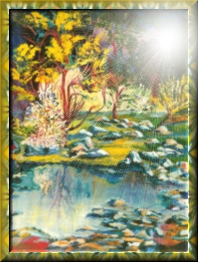

Wendolyne, una gran ejecutiva madrileña, fatigada de tanta labor, decidió tomar descanso en el "Escondrijo de Duendes".
Partió una mañana de comienzo de primavera
con una gran mochila de supervivencia al encuentro de su otro yo.
Armó su carpa, su bolsa de dormir, junto leña y comenzó
a entrelazar nuevas quimeras.
El bello río color esmeralda oscuro, los árboles guardaban aún
los tonos invernales.
Un cielo celeste , matizado de blancas nubes en cortejo y la paz , la tan ansiada
quietud para instalarse a reflexionar y confeccionar
el debe y el haber de su vida.
Ella no conoció afectos , sólo era estimada por el poder del dinero.
El primer dia, acompañada del canto
de los pájaros , el ulular
|
 "Escondrijo de duendes"
|
El cuarto día, se despidió con los
ojos húmedos de ese paradisíaco sitio, sin mezquindad;
allí sólo se valoraba la amplitud del ser, la brisa fuerte le
daba la despedida y una invitación a un presto avenir.
Asió su equipaje , lo puso en el asiento trasero de su camioneta lujosa,
regresó hacia el afluente, promulgó un:
¡¡¡URRA A LA NUEVA VIDA!!! ¡¡¡ REGRESARÉ
SÚBITO !!!